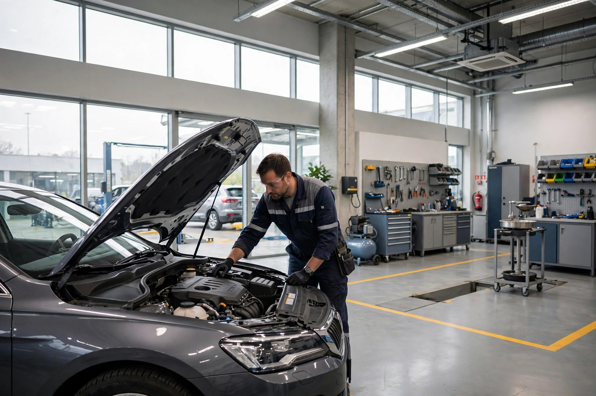
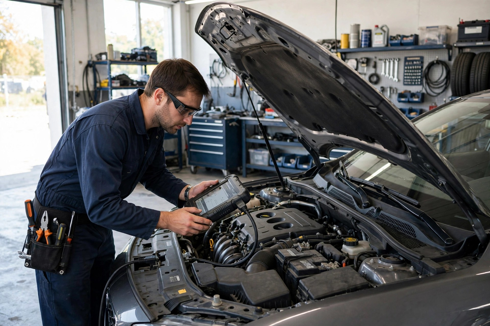
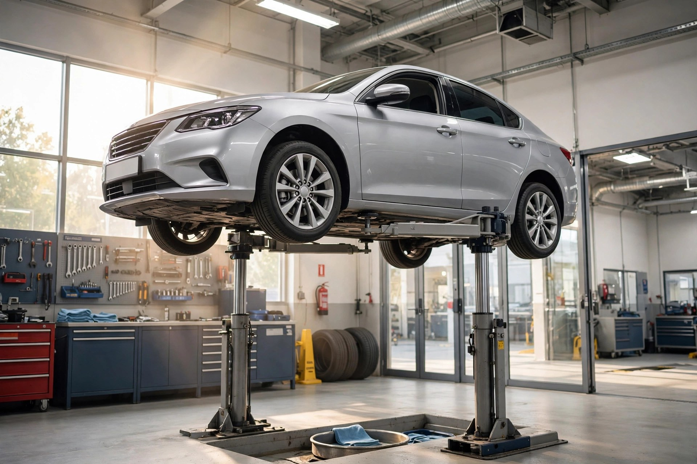
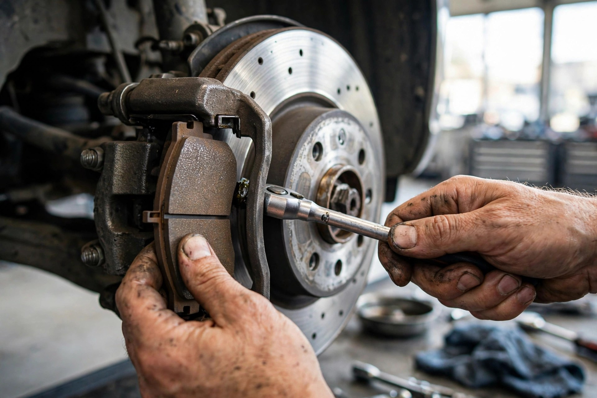

Computer Diagnostics
Complete computer diagnostics that pinpoints the real fault — no guesswork, no wasted parts.

Canning Vale, WA · Independently owned & operated
Full mechanical repairs and servicing in Canning Vale — computer diagnostics, log book servicing, brakes, transmission, suspension and exhaust. Rated 4.4 out of 5 from 14 Google reviews.
What we do
Complete computer diagnostics that pinpoints the real fault — no guesswork, no wasted parts.
Dealer-level log book servicing — major and minor — that keeps your factory warranty intact.
Brake repair specialists: pads, rotors, hydraulics and full brake system safety inspections.
Transmission servicing and repairs to keep gear changes smooth and reliable.
Steering and suspension work for safe, comfortable handling — from bushes to wheel alignments.
Mufflers and exhaust systems: repairs, replacements and noise and emissions fixes.
All makes and models
Sedans, SUVs, utes and 4WDs — we service the lot, whatever the badge.

Why choose us
Over 45 years in the industry, and still explaining every job before we start. Quality work, attention to detail, and a complimentary vacuum and windscreen clean with every service.
The workshop in action


What drivers say
★★★★☆
out of 5 · based on 14 Google reviews
Good to know
We recommend booking so we can have a bay ready for you — call (08) 9456 1131 and we'll find a time that suits.
No. We carry out dealer-level log book servicing to the manufacturer's schedule, which keeps your factory warranty valid — without the dealer price tag.
Yes — all mechanical repairs for sedans, SUVs, utes and 4WDs of any make, with full computer diagnostics.
Monday to Friday, 8:00am to 5:00pm. Closed weekends.
Come see us